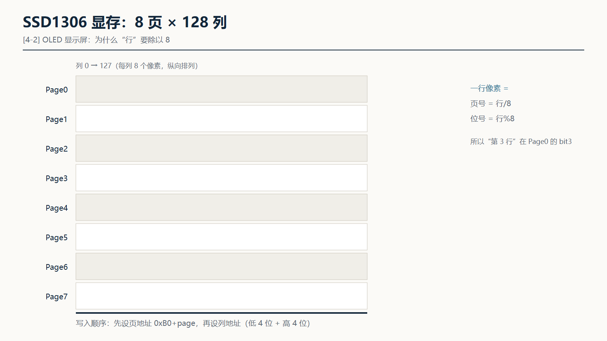

课程时长：约 20 分钟 | 深度版 | 配套结构图与看图理解
从“会调用”到“懂原理”。这一节讲清显存结构、初始化序列、字模取模，之后才能自己加中文、加图标、改字体。
理解了页/列映射，花屏、错位、只显示一半这类问题都能自己算出来，而不是靠试。
说清页地址与列的寻址方式
读懂初始化序列的每一类命令
会用取模软件并选对三个参数
能显示中文与简单图形

图 7 SSD1306 显存：8 页 × 128 列，每列 8 个像素纵向排列
这张图解释了“为什么行要除以 8”：显存不是按行组织，而是按页组织，每页 8 行像素纵向排在一列字节里。
所以写第 12 行第 30 列，实际是写 Page1（12/8=1）、bit4（12%8=4）、列 30。理解这个映射，花屏、错位、只显示一半的问题就都能自己算出来。
GDDRAM 是 128×64 位，分成 8 页，每页 8 行。写入时先设页地址（0xB0+页号），再设列地址低 4 位（0x00–0x0F）与高 4 位（0x10–0x1F），然后连续写字节。
| 概念 | 换算 | 例子 |
|---|---|---|
| 行 → 页 | 行 / 8 | 第 12 行 → Page1 |
| 行 → 位 | 行 % 8 | 第 12 行 → bit4 |
| 列 | 0–127 | 直接写列地址 |
| 命令 | 作用 |
|---|---|
| 0xAE / 0xAF | 关显示 / 开显示 |
| 0xD5 | 时钟分频 |
| 0xA8 | 多路复用率（1/64） |
| 0x20 | 寻址模式（页/水平） |
| 0x8D | 电荷泵使能，模块必须开 |
| 0x40 / 0xA1 / 0xC8 | 起始行、左右/上下扫描方向 |
| 0x81 | 对比度 |
阴码/阳码：决定 1 表示亮还是灭，必须与驱动一致
逐行/逐列：决定字节内的位顺序
顺向/逆向：决定字节排列方向
8×16 字体：一个汉字 16×16 点阵，占 32 字节
中文没有现成字库，必须把用到的字取模成数组，用索引显示。字多时建议做“字库表 + 索引”，避免每个字写一个函数。
图片同理：128×64 二值图取模成 1024 字节，整屏写入。
先确认方向命令（0xA1/0xC8）是否与取模一致
再确认页地址是否只写了 0–3（只显示一半）
最后确认列地址高低 4 位顺序是否写反
页结构是控制器 RAM 与面板驱动的折中：面板按列驱动，控制器按字节写，一个字节正好 8 个纵向像素，于是形成“页”。
取模方向必须与驱动的写入顺序一致：驱动按列写、字节低位在上，取模就要选“阴码、逐列、顺向”。
例：8×16 汉字占 16 列 × 2 页 = 32 字节；128 列一行最多放 8 个汉字（128/16）。
整屏 8 页 × 128 列 = 1024 字节，正好等于 128×64/8。
| 错误写法 | 后果 | 正确做法 |
|---|---|---|
| 页地址只写 0–3 | 只显示上半屏 | 循环到 8 页 |
| 取模方向与驱动相反 | 汉字成乱码块 | 统一阴码/逐列/顺向 |
| 列地址高低 4 位写反 | 内容错位 | 先低 4 位再高 4 位 |
| 忘记开电荷泵 | 有背光无显示 | 初始化加 0x8D 0x14 |
页寻址是控制器 RAM 的组织方式决定的：GDDRAM 按页组织，每页 8 行共用一列地址，写一个字节就填满该列 8 个像素。这也是“写汉字要按列取模”的根源。
取模方向为什么容易错：阴码/阳码决定 1 是亮是灭，逐行/逐列决定位顺序，三者任意一个与驱动不一致，显示就是乱码块。换字体前先确认驱动的取模约定。
写单个像素验证坐标映射
显示棋盘格检查上下/左右方向
换一种取模设置重新生成字模对比
| 现象 | 原因 | 解决 |
|---|---|---|
| 上下颠倒 | 0xA1/0xC8 配反 | 改方向命令 |
| 左右镜像 | 列地址递增方向错 | 调整 0xA0/0xA1 |
| 中文是乱码块 | 取模方向不匹配 | 统一阴码/逐列/顺向 |
| 只显示一半 | 页地址只写到 3 | 循环到 8 页 |
Q1. 一页多少行？
A：8 行，共 8 页。
Q2. 写显存先发什么？
A：先页地址，再列地址低/高 4 位。
Q3. 阴码阳码区别？
A：1 表示灭还是亮。
Q4. 为什么要电荷泵？
A：OLED 需要高压驱动。
Q5. 中文怎么显示？
A：取模成数组，按索引写入显存。
Q6. 局部刷新怎么做？
A：只改指定页/列范围，不全屏写。
Q7. 为什么一页是 8 行？
A：一个字节 8 位，纵向排列正好 8 行。
Q8. 局部刷新怎么做？
A：只设目标页/列，写入变化区域。
1. 第 20 行在第几页？
答：Page2（20/8=2）。
2. 一屏多少字节？
答：1024。
3. 列地址怎么设？
答：低 4 位 + 高 4 位两条命令。
4. 花屏先查什么？
答：扫描方向与取模设置。
☐ 懂页/列寻址
☐ 能读初始化命令
☐ 会取模
☐ 能显示中文